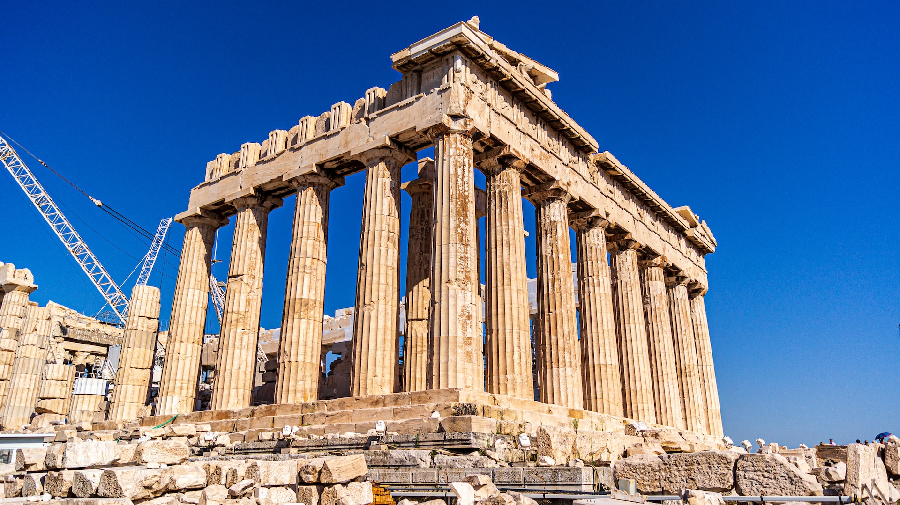
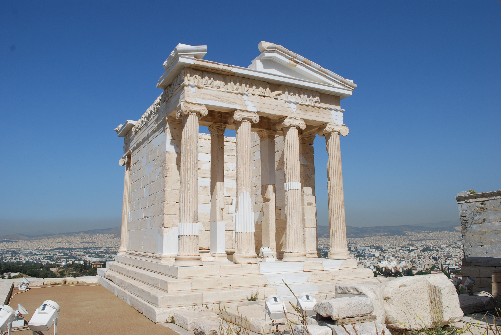

Athens Tour Packages
Discover Athens like never before with our curated selection of immersive tours.
Acropolis & Parthenon Tour
$85 per person
Explore the most iconic landmark of Athens, the Acropolis, and its crown jewel, the Parthenon. This guided tour will take you through centuries of history, art, and mythology, offering deep insights into ancient Greek civilization. Learn about the architectural marvels, the legendary stories behind the ruins, and experience breathtaking panoramic views of the city.
Ancient Agora Walk
$60 per person
Step into the birthplace of democracy as you explore the Ancient Agora of Athens. Walk along the paths once traveled by great philosophers like Socrates and Aristotle, and admire the well-preserved Temple of Hephaestus. This tour provides a deep dive into the daily life of Athenians in antiquity, with fascinating stories about commerce, politics, and culture.
Athens by Night

$100 per person
Experience the magic of Athens after sunset on this mesmerizing night tour. Stroll through beautifully illuminated streets, enjoy stunning views of ancient ruins glowing in the night, and indulge in authentic Greek cuisine at a traditional taverna. With live music and cultural performances, this tour offers a perfect blend of history, gastronomy, and entertainment.
Greek Mythology Experience
$75 per person
Immerse yourself in the world of gods and heroes with this fascinating mythology-themed tour. Visit legendary sites like the Temple of Olympian Zeus and learn about the myths of Athena, Poseidon, and the powerful Olympian gods. Through captivating storytelling and historical insights, this tour will bring Greek mythology to life right before your eyes.